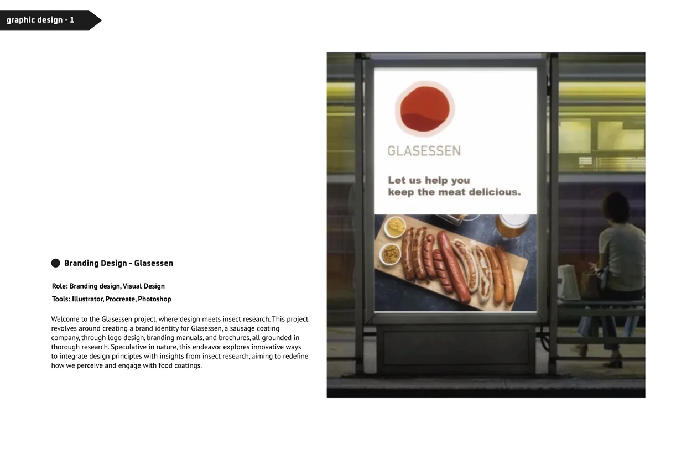
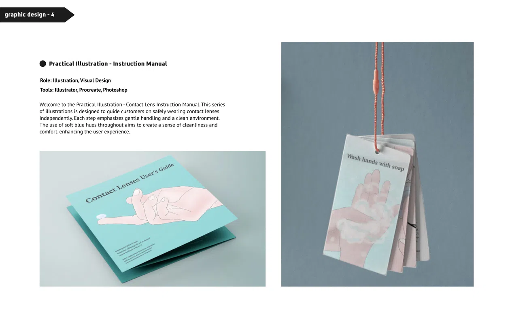
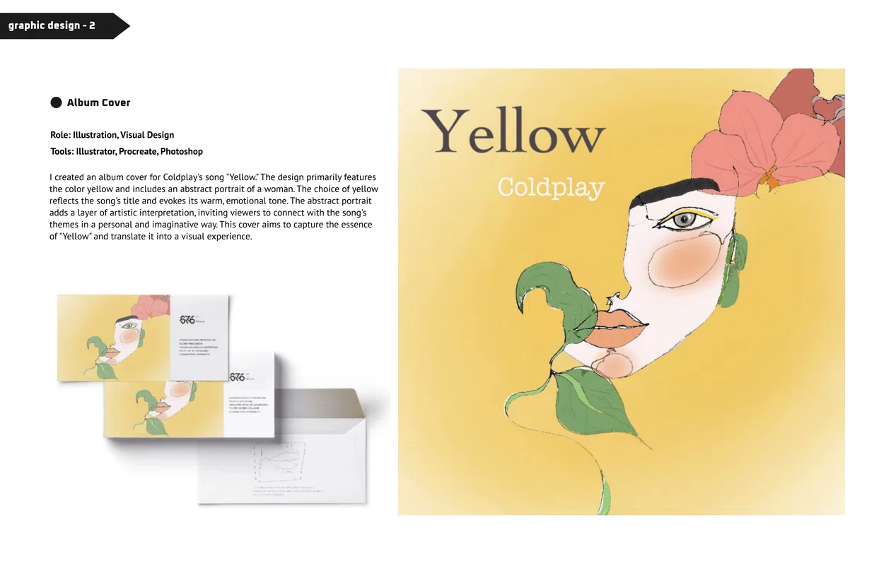
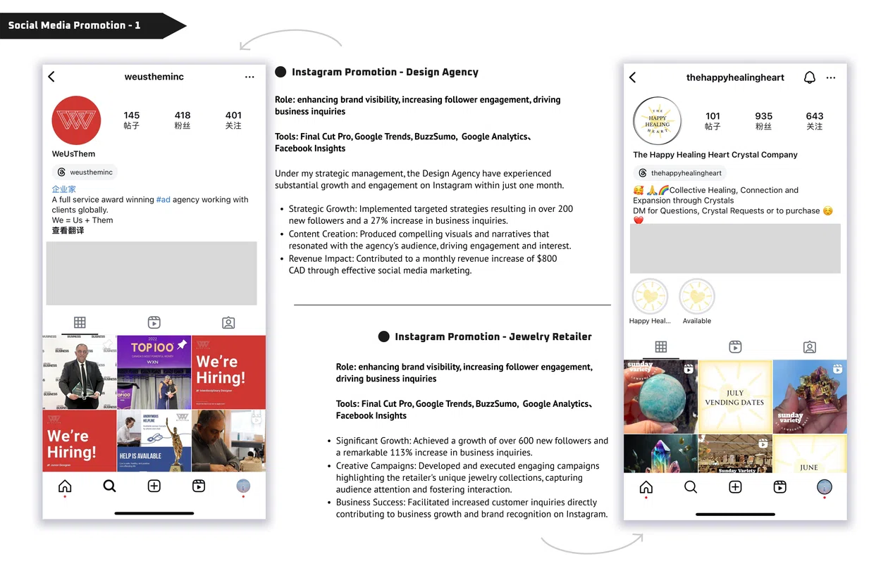
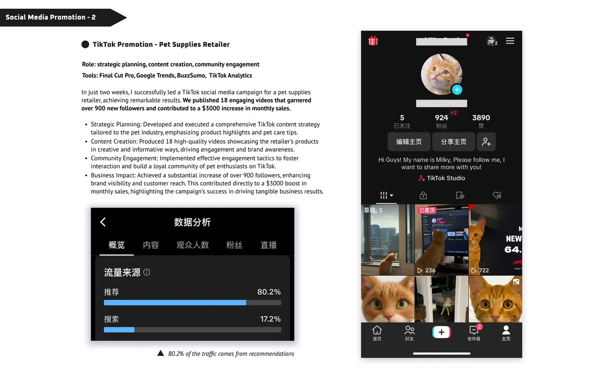
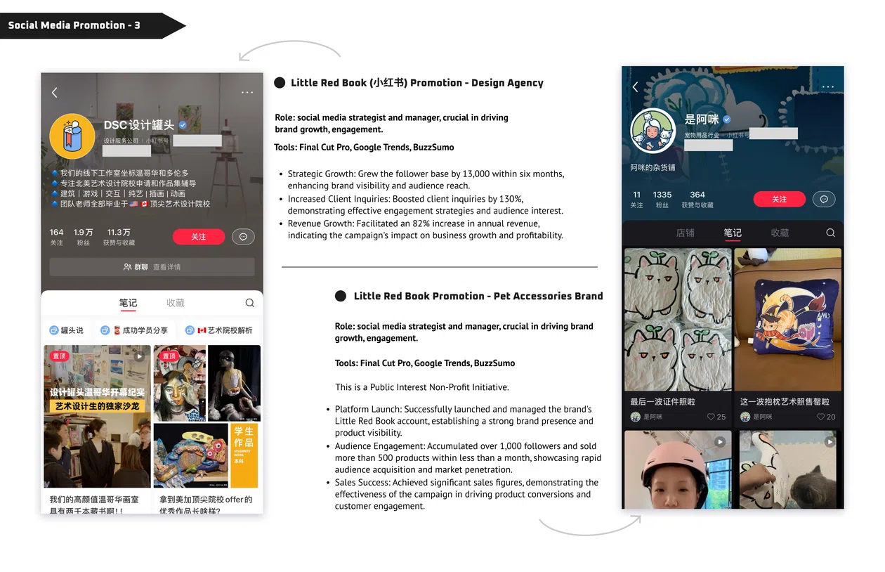
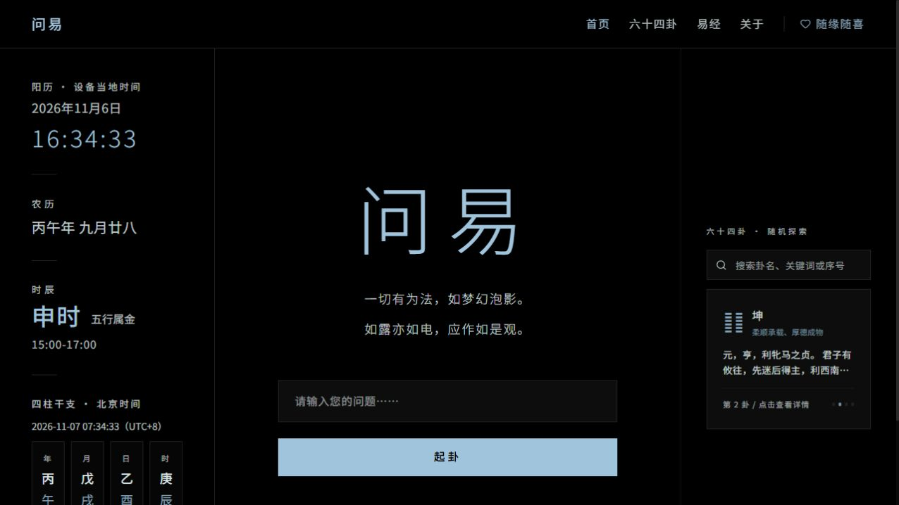

01 / PDF
01 / PDFChat IT Out / Conflict Resolver
A guided space for preparing, navigating and reflecting on difficult conversations.
Selected track · Original tone · 5-min loop
Hover / Click / Machine
Sound is on by default. If autoplay is blocked, your first click or key starts it.
Browse by discipline: portfolio case studies alongside live Vibe Coding projects.
01 / PDFA guided space for preparing, navigating and reflecting on difficult conversations.
 01 / PDF
01 / PDFLearning through an augmented-reality scavenger game for children.
 01 / PDF
01 / PDFMaking webcomics more accessible through audio and thoughtful interaction.
 01 / PDF
01 / PDFAn ocean-minded app concept connecting awareness, habits and visual storytelling.

01 / PDFA speculative visual identity connecting food coatings and material research.
 01 / PDF
01 / PDFA friendly storybook world of forest characters, courage and discovery.

01 / PDFStep-by-step illustrated guidance with a soft, reassuring visual language.

01 / PDFAn illustrated visual interpretation of a song, centered on warmth and yellow.

01 / PDFInstagram content and visual storytelling for a design agency.

01 / PDFPet-focused short-form content mixing product education and personality.

01 / PDFCampaign planning and social storytelling on Xiaohongshu.

A daily space for cycle awareness, mood and everyday routines.

An interactive way to explore the I Ching and its sixty-four hexagrams.

Traditional drawing techniques meet digital colour, line and texture.
No project in this category has been documented in the supplied portfolio yet.